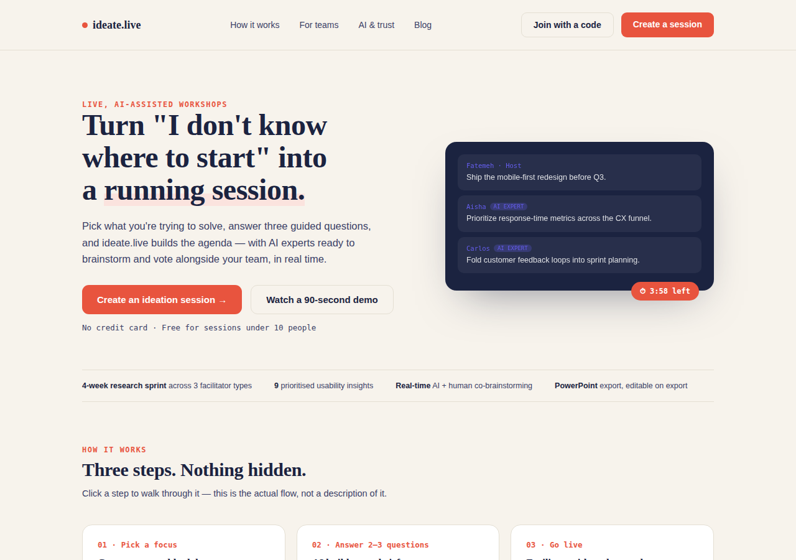
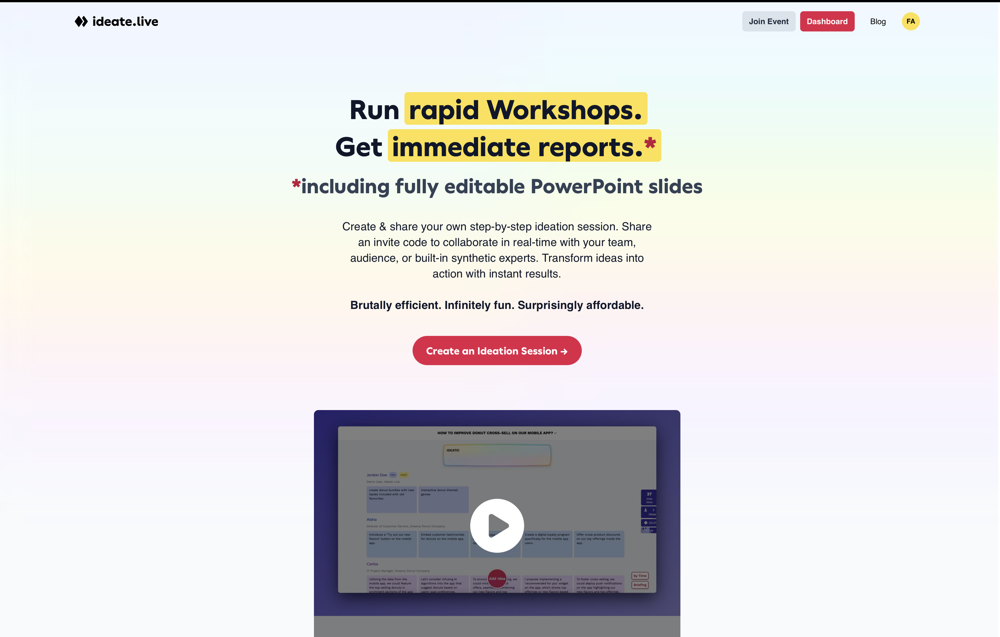
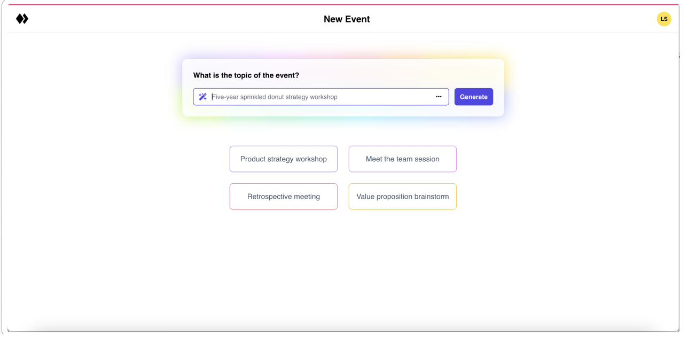
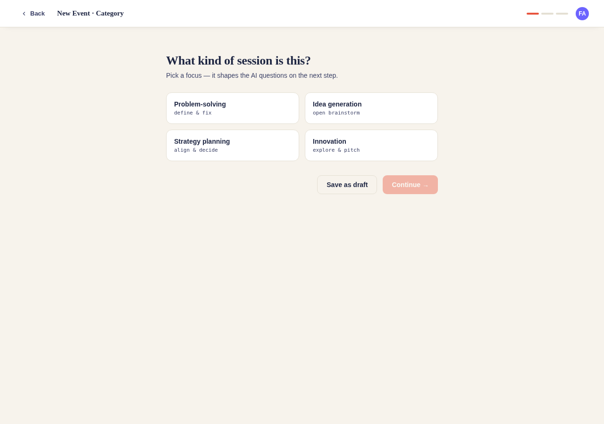
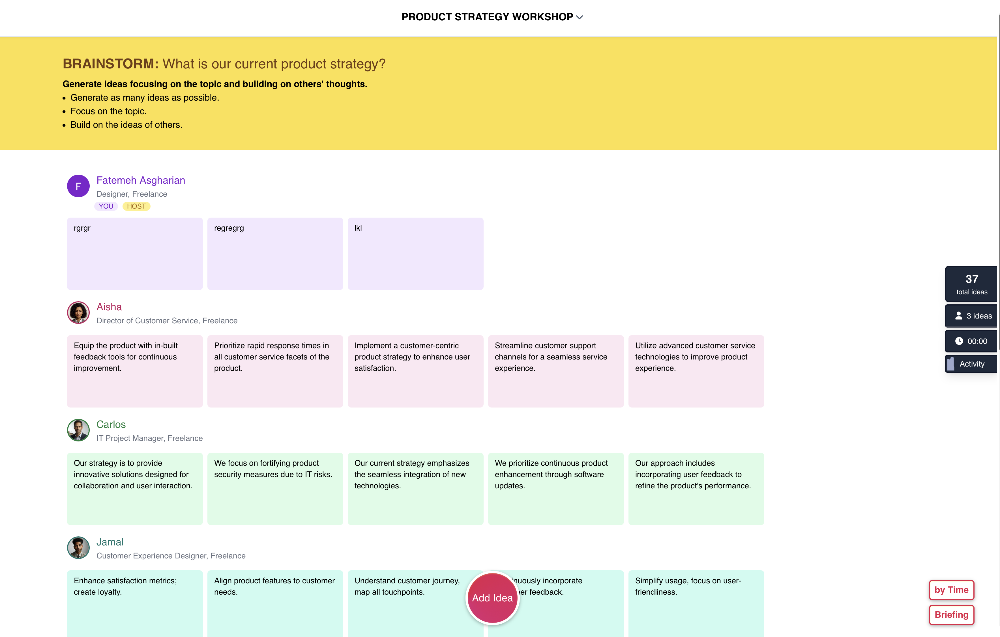
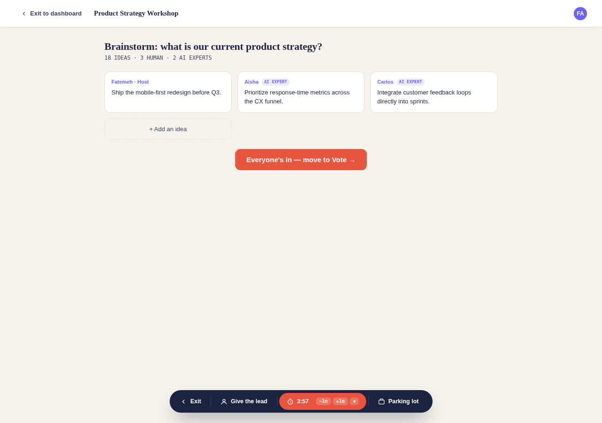

Ideate Live
A live workshop platform that made people freeze right when they needed momentum most — redesigned around one idea: options before explanations.

A great idea that lost people at the door
Ideate Live’s premise is genuinely good: run a live brainstorm with your team and a few AI “synthetic experts” who contribute and vote alongside everyone else. In testing, that part worked — people lit up watching ideas roll in from both humans and bots in real time.
But almost nobody got that far without friction first. The team had a hunch something in onboarding and event creation was quietly costing them users, and asked for a proper look before building more features on top of a shaky foundation.
The interface asked for confidence nobody had yet
Maria is 50, an event director who plans every workshop down to the minute. She typed a topic, hit generate, and nothing happened — the AI silently rejected it for being too short, with no message telling her why.
That moment turned out to be the whole project in miniature. Across every persona tested — a first-time facilitator, a detail-driven planner, a recurring power user — the same pattern kept surfacing: the product assumed a confidence level the user didn’t have yet, and gave them no way to build it.
Mapped across the full host journey, the emotional arc made it impossible to miss:
Even the bright spot — the live session — had a hole in it: once a workshop started, the host had no way to exit and return, no way to hand hosting to someone else, and no way to adjust a timer that was already running. Three separate participants flagged this independently, unprompted.
Watch first, don’t just ask
We ran think-aloud usability sessions with two contrasting users rather than surveying opinions after the fact, synthesized the raw reactions into empathy maps, then reframed pain points as How Might We questions so the team solved the real problem instead of the first idea that came to mind. A competitive scan (Miro, Mural, FigJam AI) confirmed the gap was real: nobody in the category explains AI participation clearly, and nobody hands facilitators control once a session goes live.
Interestingly, the live-session screen was the hardest for me to spec from a blank page — I couldn’t easily write down everything a facilitator would need in one sitting. What worked instead was sketching a few concrete options first, reacting to those, and only then writing the fuller explanation. That’s the exact same pattern the research surfaced: options before explanation is easier to work with than explanation before options — for facilitators using the product, and for me designing it.
Everything downstream came back to one working principle:
Upstream of clicking “Generate,” the job is to lower the bar to entry. Once a session is live, the job flips — the facilitator needs full control, because mistakes at that point are costly and hard to undo.
Three moments, rebuilt
01 · First impression

Why: the tagline said “efficient” and “fun” — not what the product actually did. The redesign states the value prop in the first sentence and labels AI vs. human contributors side by side, so nobody has to guess what “AI experts” means three steps later.
02 · Event creation


Why: a single open text box put the burden of “knowing exactly what to type” on the user. Category chips give Explorers a starting point — options first — and two short AI-guided questions replace the silent character-minimum rejection entirely.
03 · Facilitator control


Why: research literally circled the missing exit path. The redesign adds one persistent toolbar — Exit, Give the lead, an editable timer, and a parking lot — present in every phase of the session.
What we know, and what’s still a hypothesis
The frustration documented above is real, first-hand research — not an assumption. What I don’t have yet is a second round of usability testing against this redesign, so I’m not attaching a satisfaction score to something unvalidated.
Every “after” state answers a friction point that more than one participant raised independently — a strong signal, not proof. The interactive prototype exists specifically to make that next round of testing possible: put it back in front of Jennifer and Maria, and see if the emotional arc actually flattens out.
What shipped
- An interactive, clickable prototype — the full journey from homepage → guided event creation → live session → voting → report, built to walk through end to end, not just view as static screens.
- A redesigned AI-trust model — one consistent label for every AI touchpoint, replacing a feature explanation that had appeared twice on the same screen.
- A facilitator toolbar that exists in every phase of a live session, closing the single most-repeated complaint in testing.
Walk through it yourself
Every screen above is clickable, not just illustrated — here’s the full flow in motion.